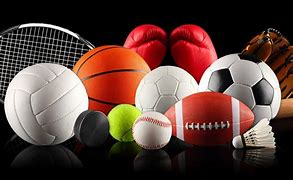
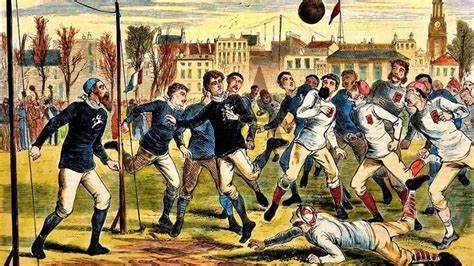

Os Esportes são todas atividades físicas realizadas pelo homem e que tem o objetivo de promover o fortalecimento da saúde e o equilíbrio da mente e do corpo. As práticas competitivas estão sujeitas a regulamentação de um ente legislador. O esporte colabora com a socialização, formação e desenvolvimento dos indivíduos.
As atividades esportivas ou recreativas nasceram na Antiguidade e sua história é dividida em três períodos. O primeiro deles é o Esporte Antigo, que vai até a primeira metade do século XIX. O Segundo momento é denominado Esporte Moderno, entre 1820 até 1980. O último é o Esporte Contemporâneo e vai de 1980 até a época atual.
As primeiras atividades eram realizadas com o objetivo de sobrevivência e só posteriormente ganharam características de esporte. Eram a corrida de caça, esgrima e lutas. Algumas civilizações antigas como a China e Japão desenvolveram as artes marciais. O Egito promovia a corrida, o arremesso e praticava uma atividade semelhante ao que atualmente se conhece como futebol.
Mas foram os gregos que criaram os Jogos Olímpicos da Antiguidade. Essa civilização foi também responsável por realizar os Jogos Fúnebres (jogos homenagem a recém-falecido), Jogos Píticos (antecessor dos jogos Olímpicos), Panatenéias (festa com jogos em homenagem a Atena) e Jogos Ístimicos (honra a Poseidon).
Os primeiros jogos olímpicos surgiram na cidade de Olímpia, a partir de 779 a.C. Durante a competição eram realizadas atividades de luta, arremesso, salto à distância, boxe, corrida. Os vencedores recebiam uma coroa de oliveira e diversas outras recompensas.
Durante os anos de 394 d.C., o imperador romano Teodósio decretou que os jogos eram festas pagãs e que por isso deveriam ser banidas, pois era inaceitável para povos onde a religião era o monoteísmo.
Os Jogos Públicos ou jogos circenses surgem na Idade Média. Estas atividades adaptaram os conceitos helênicos dos jogos e criaram os combates entre gladiadores. Surgiram, assim, os Torneios Medievais (competições de cavalarias), Jeu de Palme (jogo parecido com o tênis), Soule , Gioco del Calcio (jogo parecido com o futebol) e Justas.
Em 1896, Pierre de Coubertin remodelou os Jogos Olímpicos e o levou de volta para Atenas e mais 13 nações. Os jogos teve a participação de 241 atletas e realização de 43 eventos.
O século XVIII passou por diversas transformações econômicas e sociais. A Inglaterra tornara-se o berço científico, da industrialização, urbanização e capitalismo. O país também passou a se destacar no mundo do esporte, principalmente o futebol. Na época, o esporte era bastante violento e por isso o professor Thomas Arnold sugeriu que fosse modificado para ter caráter educativo. A ideia não foi muito bem aceita pelos praticantes e isso acabou colaborando o surgimento de dois jogos distintos o futebol, jogado com os pés, e o rugby, mais violento e praticado com mãos e pés.
Em 1978, foi criada a Carta Internacional de Educação Física e Esporte. O documento apresenta instruções e questões relativas à atividade esportiva. Diversos outros documentos foram criados posteriormente com o objetivo de reconhecer o esporte como um direto de todos e como um benefício para a inclusão social.
Todos conhecem os benefícios dos esportes para o corpo, mas as vantagens não ficam somente nesse fator. A prática de atividades físicas também colabora com a saúde mental e quem realiza praticas esportivas constantes tem uma melhor qualidade de vida. Entre as quais:
A ausência de atividades físicas, por outro lado, aumenta o sedentarismo e contribui com: